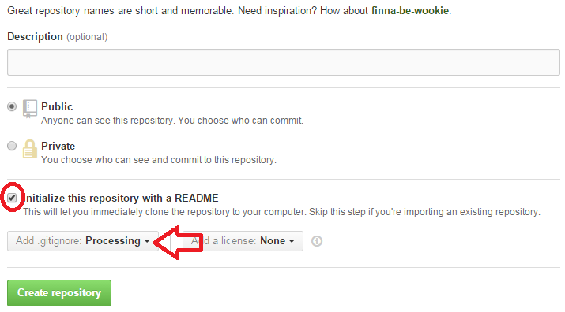

Create a Github Account
Visit https://github.com/ and create a free account.
Create a New Repository on Github
Login. Click the  button. Call it Camp or whatever you like.
button. Call it Camp or whatever you like.
Check the Initialize this repository with a README check box, and select Processing from the list.
Copy the URL

Open Git Bash
Open Git Bash from Start Menu > All Programs > Git > Git Bash

Create Local Folders
Enter these commands in order. Press enter after each line.
cd /h/ |
cd means "change directory" and in this case you're navigating to your H: drive in Windows. Alternatively you could consider doing cd /c/ to navigate to your C: drive. |
mkdir MyNameOrSomething |
mkdir means "make directory" or in more familiar terms "make folder" and the second part, MyNameOrSomething is simply a name you get to give it. What you enter for the name does not matter. |
cd MyNameOrSomething |
Again, using the "change directory" command, we are simply navigating somewhere. In this case, we are navigating or "changing directory" to the folder we just made, MyNameOrSomething. |
Clone Your Repository
Recall we previously copied our remote repository's URL above. The command format is as follows:
git clone <github-url> <any-name-you-choose>
example:git clone https://github.com/Clark/Camp.git MyCampProject
Pasting in Git Bash isn't obvious. To do it, follow these steps:
Change Directory, Again
cd <your-cloned-folder-name-from-above>
All these commands in one shell looks like this:
So, What Just Happened?
We created a couple folders, and copied our project on Github into one of them. We can navigate to it using Windows Explorer which has this icon: